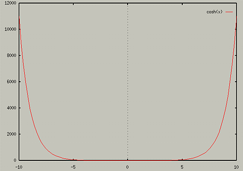
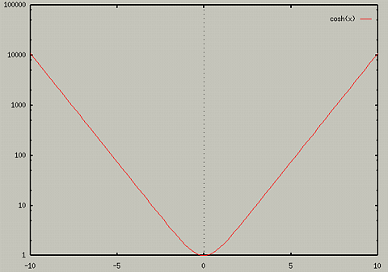

Sometimes, when a plot has drastic changes in one of its variables, it
is useful to use a log scale on that axis. For instance, the graph of
cosh(x) for x=[-10,10] looked like:

If we wanted to use a logscale on the y axis, we would use the
set logscale command. The usage of this command is
To see what logscale is being used, type:
To turn logscaling off for a axis, use
We if typed the following lines in,
- set logscale y
- plot cosh(x)
We would get the following graph.

This can also be useful for data plots.
Table of Contents - Previous - Loading commands from Files - Next - Displaying a Grid behind Graph
College of Natural Sciences /
University of Northern Iowa /
manager@cns.uni.edu
Copyright © 1996 College of Natural Sciences. All Rights Reserved.
Last Modified: 10/29/96